CAM-雕刻特征刻字
SOLIDWORKS CAM是作为SOLIDWORKS的插件加载使用。它能实现设计-加工一体的功能，在设计特征发生修改时，其对应的CAM设置也会进行提示更新。
选择SW CAM的原因：
\1. 2.5轴加工简单,手工编程居多
\2. 2.5轴设备价低,用户不愿意再投入高成本软件
\3. 批量重复性生产,代码重用性高,编程人员少
当前SW CAM的不足：
\1. 主要支撑用于2.5轴；
打开插件
勾选启用插件【工具-插件-SOLIDWORKS CAM】，在SOLIDWORKS 插件中，找到SOLIDWORKS CAM 插件，勾选启用。
（如果是需要自启动，则勾选右侧“启动”选项，下次打开SW软件时，插件即会自动加载）
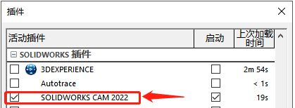操作流程
草图
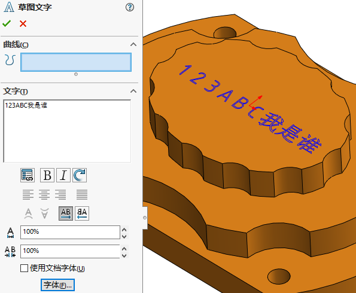 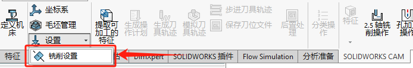 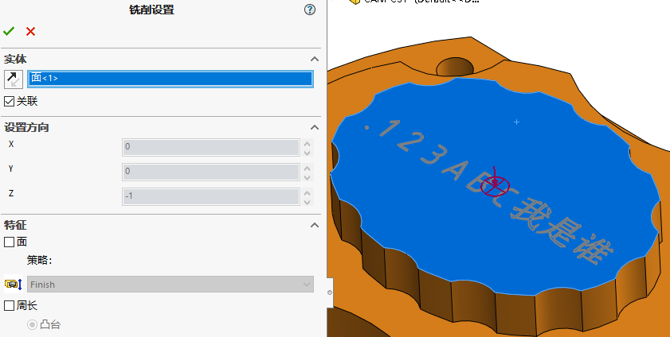提取加工特征
SOLIDWORKS CAM使用基于特征的加工方法，因此在创建刀具路径之前要确定需要加工的特征。
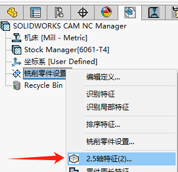 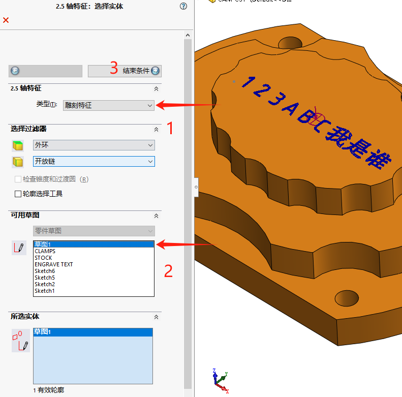 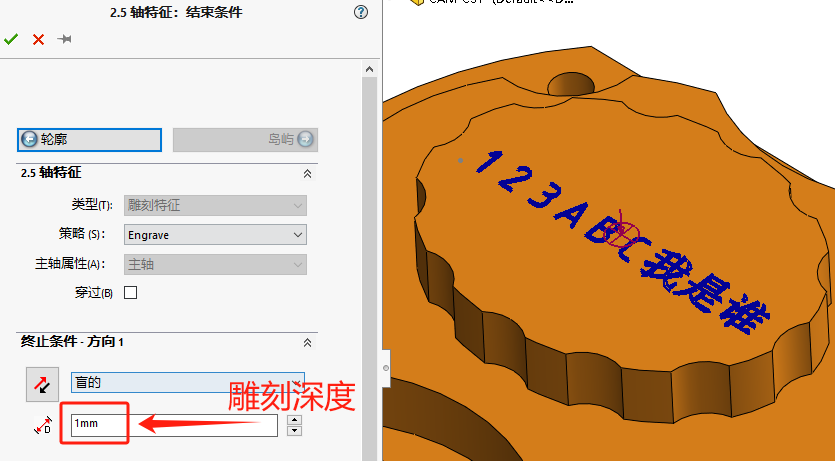生成操作计划
（备注：显示操作名称和所选工具，并显示为蓝色，表示它们还没有工具路径。）
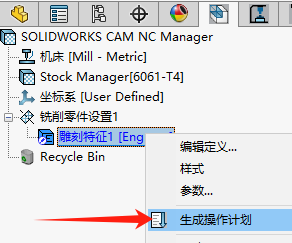编辑操作
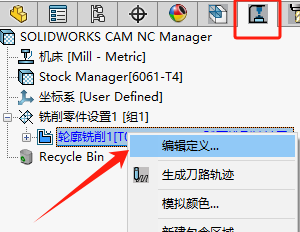有些特征需要多次操作才能完成，而工具大小等默认设置，进给量、速度和机器策略由技术数据库控制。这里设置加工深度，让其一次性走刀。
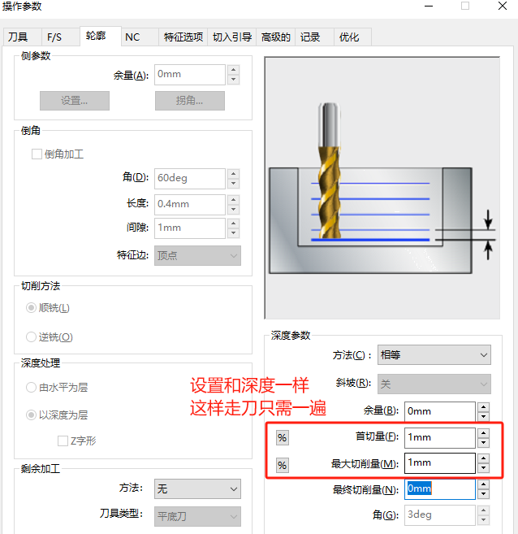生成刀具轨迹
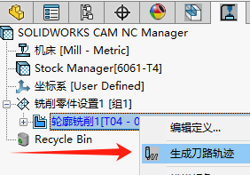模拟刀具轨迹
一旦创建了工具路径，您可以通过模拟它们来更好地理解它们的加工状态。
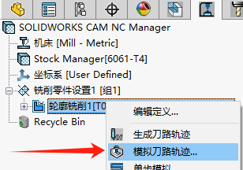结果
刀具路径开始从图形区域的零件中加工零件
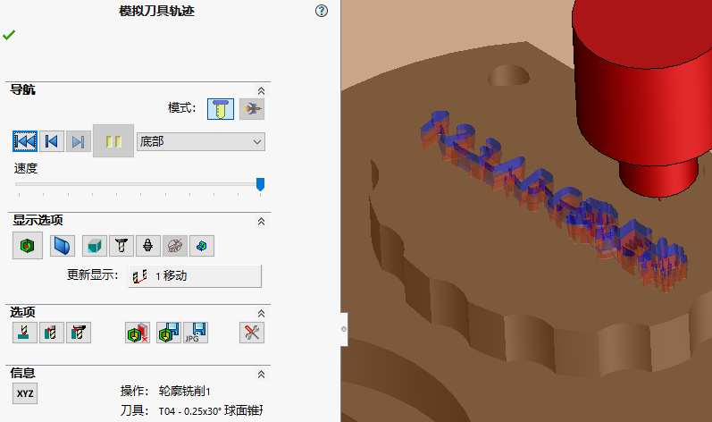圆柱面刻字
SW 原生的【雕刻特征】是2.5轴加工。圆柱面刻字需要4轴才方便。